Basic design goals
The FreeType auto-hinter will be designed in order provide the following
features:
absolutely patent-free from day 1 !!
capable of hinting monochrome and anti-aliased glyphs
differently, in order to generate high-quality images matched to
the target device.
capable of real-time hinting of outlines, in order to be used
with any FreeType 2 font driver ( TrueType, Type 1, CFF/Type 2,
etc..) that doesn't provide its own hinting algorithm.
we'll try to make the auto-hinter as independent as the rest of
FreeType 2, in order to make it usable in other projects.
well, as usual with FreeType code, expect small footprint, code
size and excellent performance ;-)
Development
The FreeType Auto-Hinter is developed by David Turner, lead FreeType
architect and developer, under contract with an unnamed company. Among
other things, the following have been agreed when signing the contract:
The auto-hinter will be released under an open source license similar
to the FreeType one (with copyrights reverted to the Company). Hence,
it will be included in FreeType 2 when the latter is released.
The source code for the auto-hinter will be kept confidential until
the contract delivery date, set to the end of May 2000. However,
its algorithms will be freely and publicly discussed and detailed
in a dedicated mailing list. Screen shots of the on-going work will
be posted on web pages too.
Other than the legal stuff, the general approach is extremely practical,
and features will be introduced progressively in the auto-hinting engine
to enhance its quality and performance. Do not expect beautiful results
immediately then :-)
Of course, the engine will be tested against a large number of fonts.
However, it will first focus on correctly hinting widely available
high-quality fonts (Arial, Times, Helvetica, Palatino, Courier, etc..)
for Latin scripts. Managin ideographs will be added later as these will
much probably require some specific settings.
Current Status
Aaack, I'm supposed to describe the auto-hinting algorithms there, but
detailing them will take too long. Here's only an overview of the code
that is currently written and working :
The module contains distinct feature-detection and alignment control passes.
a. The Feature Detection phase :
This phase is performed on the unscaled master outline of a glyph. Its
purpose is to detect stems, serifs as well as point candidates for blue
zone alignment
Basically, we will start with something simple, consisting in:
Detecting horizontal or vertical "segments". A segment is simply a
set of successive points aligned either on the horizontal or vertical
direction. Each segment has a direction, depending on the contour that
includes it.
linking segments together, in order to recognize vertical or horizontal
"stems". Basically, two segments can be linked when they delimit a
"span" during the scan-conversion process. Basically, this means :
they are both aligned on the same axis, and have opposite
directions.
in TrueType, outlines are filled to the right of the contour's
direction. This means that if the segments are vertical, the
upwards segment must be located to the left of the downwards
segment.
Similarly, for TrueType, if the segments are horizontal, the
leftwards segment must be placed below the rightwards one.
For Type 1, which uses the opposite filling convention, inverse
rules must be applied. This means that we need to know in advance
what's the filling rule used in an outline.
Each segment is linked to the "closest" linkable segment. We do this
by scoring the "distance" between two segments, and keeping the one
with the lowest score. The scoring function must be simple and reflects
basically the "distance" between the segments.
Then when two segments are linked "together", i.e. when we have
(seg1->link == seg2 && seg2->link == seg1->link), they form a
vertical or horizontal "stem"
When (seg1->link == seg2 && seg2->link != seg1), then seg1 is said
to be a "serif" segment, and we put the value (seg2->link) in its
field (seg1->serif) to indicate this.
a segment is said to be "rounded" when either one of its extrema
points is off the outline (cubic control point).
We compute the outline "edges". An edge is simply an axis coordinate
that contains one or more segments on it. Each edge inherits the
properties of its segments, following these rules:
- an edge that contains a stem segment is a stem edge
- an edge that only contains serif segments is a serif edge
- an edge that only contains rounded segments is a rounded edge
For now, we will not control italics diagonals or other extra features.
The goal is to progressively introduce complexity to solve specific cases
not covered by the current algorithm.
b. The Alignment Control phase:
Once a glyph's features have been detected, its scaled outline can be
aligned to the pixel grid of a given character size, depending on the
features detected.
With our current scheme, it really means aligning the "edges" to the
pixel grid, then interpolating points between them. Several techniques
can be considered :
distortion function minimization:
The technique is used in a famous John D. Hobby paper which
describes an algorithm for automatically tuning monochrome bitmaps.
Basically, after a rather exhaustive feature detection pass based
mostly on Voronoi diagrams, a distorsion function is built.
The alignment control pass then tries to minimize the function,
by inverting a matrix while finding optimal integer coordinates
for some of the solution's values. It uses a rather complex technique
IMHO and a lot of things could be done to simply this pass and make
it a lot more speedy..
The big problem here is that creating the distortion function
means the introduction of a great number of more or less liberal
scaling factors, that then need to be hand-tweaked to render
esthaetically optimal results. Also, the correlation between
these factors and the final result is absolutely not obvious
given the detection measures performed..
There are also other issues in Hobby's paper, like the fact that
most of the distortion functions it uses do not map really well to
the problem space, and introduce un-necessary constraints on the
solution.
We could however use something similar, but in a much simpler form
in order to minimize the alignment of our edges.
direct alignment techniques:
Most TrueType bytecoded programs do something along the following
lines (this information comes from months of study needed to write
a normal TrueType bytecode interpreter):
align important edges to pre-computed positions of the pixel
grid. These position mainly correspond to the traditionnal
blue values in the vertical direction, but the TT bytecodes
usually also include horizontal "blues"..
align other edges of the font to the pixel grid, checking
that the relative order of edges is changed..
check that a few stem/serif widths are correct (including the
width of some diagonals).
eventually apply some manual modifications for a given character
size (usually through a DeltaP or DeltaC instruction).
interpolate all other points that haven't been touched.
eventually apply some other manual modifications to interpolated
points (also through DeltaP or DeltaC).
It is believed that most of the phases of this process can be
directly reproduced through clever algorithms.
This research will start with direct manipulation research, mainly because
the knowledge acquired during it can easily be translated to a function
minimzation algorithm later, if results do not follow. The opposite way
isn't necessarily easy.
ScreenShots
Here are some screenshots taken on Friday 10 March 2000 with the current
auto-hinting module. Please note the following :
Glyph metrics are not hinted in this version, so do not be surprised
if you see some strange inter-character spacing. Composite glyphs (i.e.
mainly accented characters) are also not hinted correctly as they will
be in a near future.
Diagonals are not hinted for now, so don't be surprised to see the
same "colorful" letters as with TrueDoc.
The anti-aliased images correspond to the same grid-fitted outlines than
the monochrome ones. For now, we do not explicitely support anti-aliased
hinting, even though this should not prove to be really hard..
The anti-aliased images are rendered through Beta FreeType 2's default
renderer which supports 128 levels of grays (this will go as high as
256 for the release, but shouldn't make a difference to the human
eye..).
These images lead me to the following conclusions regarding the current
prototype.
Quality of a sans-serif font like Arial seems good for monochrome
bitmaps, and excellent with anti-aliasing (even though we do not
specifically hint for this "resolution", which would create even
better looking glyphs). Howver, it could certainly be made better.
Even though we do not process diagonals for now, there is a visible
improvements on italics fonts too. This probably comes from adjusting
glyph heights to the blue zones and normalizing stem widths.
Quality of a serif font like Times New Roman is between poor and
good for monochrome bitmaps. There is a noticeable improvements
compared to scaled outlines, however a lot should be done to improve
the situation.
I'm still very surprised by the results given by the Courier New face.
I'll have to look in details what's really happenning. Apparently,
most of the ends on this font are rounded and slightly oversized
commpared to the tiny edge and stem strokes.
Images dated 2000-02-10
Arial
Unhinted monochrome outlines
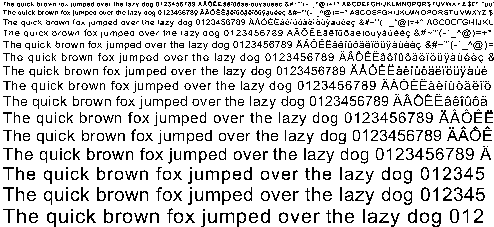
Hinted monochrome outlines
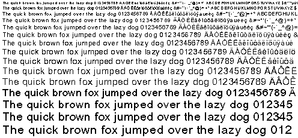
Hinted anti-aliased outlines
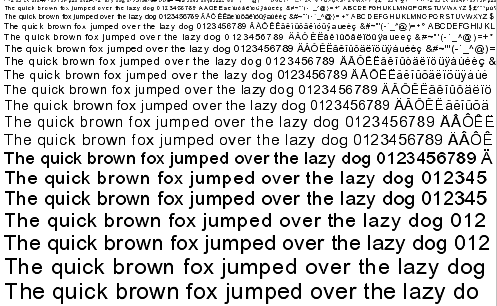
Arial Italic
Unhinted monochrome outlines
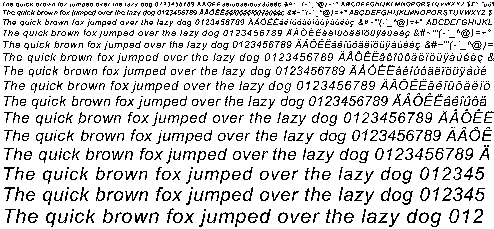
Hinted monochrome outlines
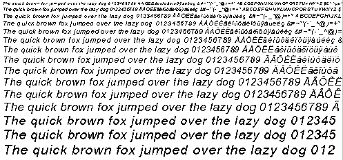
Hinted anti-aliased outlines
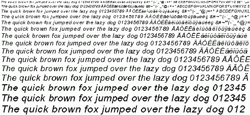
Times New Roman
Unhinted monochrome outlines
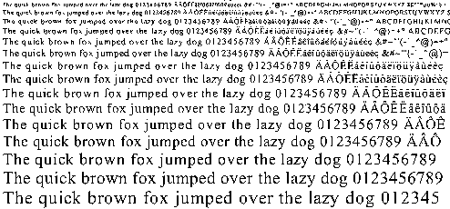
Hinted monochrome outlines

Hinted anti-aliased outlines
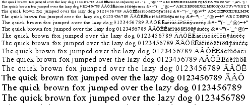
Times New Roman Italic
Unhinted monochrome outlines
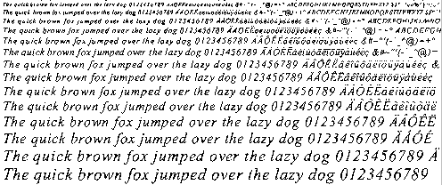
Hinted monochrome outlines
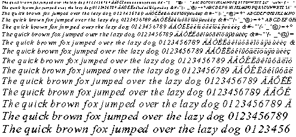
Hinted anti-aliased outlines
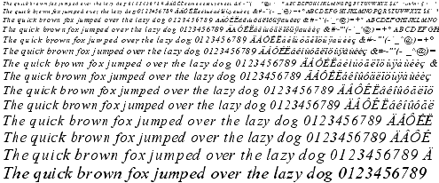
Courier New
Unhinted monochrome outlines
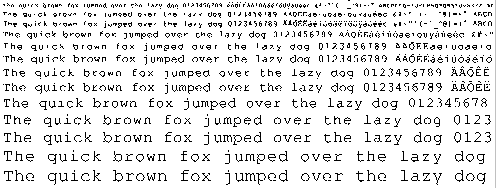
Hinted monochrome outlines
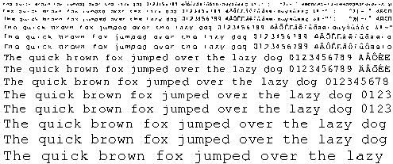
Hinted anti-aliased outlines
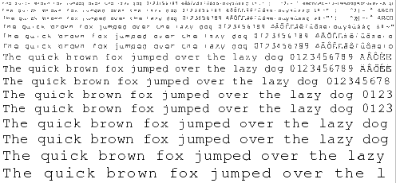
Courier New Italic
Unhinted monochrome outlines

Hinted monochrome outlines
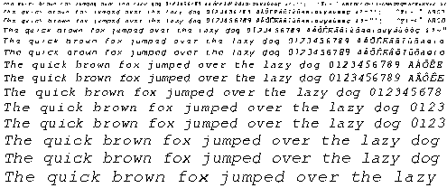
Hinted anti-aliased outlines
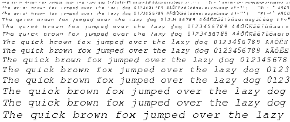
Things TO DO !!
Well, for now:
Finish this damn web site !!
Implement composite glyph hinting correctly. This requires a few
changes in FreeType 2 itself to be able to extract the subglyphs
list.
Introduce extra edges for the left-most and right-most extrema
in a font (when those are not covered already by an edge). This
seems to be important for many things, including diagonals !!
See what's so wrong with Courier New ?
Test with more fonts to detect issues (seems Georgia show some
small problems in the blue zone detection/alignment code..).
Implement anti-aliased hinting (should be easy and give good
results)
Test with asian fonts, and try to devise an algorithm to improve
their rendering (apparently, equal spacing of white distances is
much more important than correct positioning of black ones..).
Test a new algorithm were basically the auto-hinter would try
to minimize a distortion function (a la John Hobby). However,
the distortion would be computed very differently and be
correctly mapped to our problem space..
For now, the auto-hinter is limited to TrueType outlines, this is
only due to the filling convention used to orient inside/outside
contours within glyphs. I need to change it to make it work with
Type 1 outlines too (should be easy..,
because the hinting doesn't depend on the polynomial order of
curves).
|